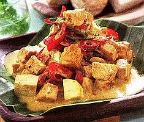

Sambal Goreng Tahu Tempe

Bahan-bahan :
- Tahu, 2 potong ( 75 gram ), potong bentuk dadu, goreng
- Tempe, 1 potong ( 75 gram ), potong bentuk dadu, goreng
- Santan, 300 ml dari 1/4 butir kelapa
- Minyak goreng, 2 sendok makan
Bumbu :
- Bawang putih, 3 siung, iris tipis
- Bawang merah, 5 butir, iris tipis
- Cabai hijau, 2 buah, potong serong
- Cabai merah, 2 buah, potong serong
- Cabai rawit, 4 buah, potong serong
- Daun salam, 1 lembar
- Lengkuas, 2 cm, memarkan
- Garam, secukupnya
- Gula pasir, secukupnya
- Kecap manis, 3 sendok makan
Cara memasak :
- Panaskan minyak, tumis bawang putih dan bawang merah hingga harum.
- Masukkan bumbu yang lain, aduk rata. Masak hingga bumbu sedikit layu.
- Tambahkan tahu dan tempe, aduk rata.
- Tuang santan, masak hingga bumbu meresap dan santan menyusut. Angkat.
- Sajikan hangat.